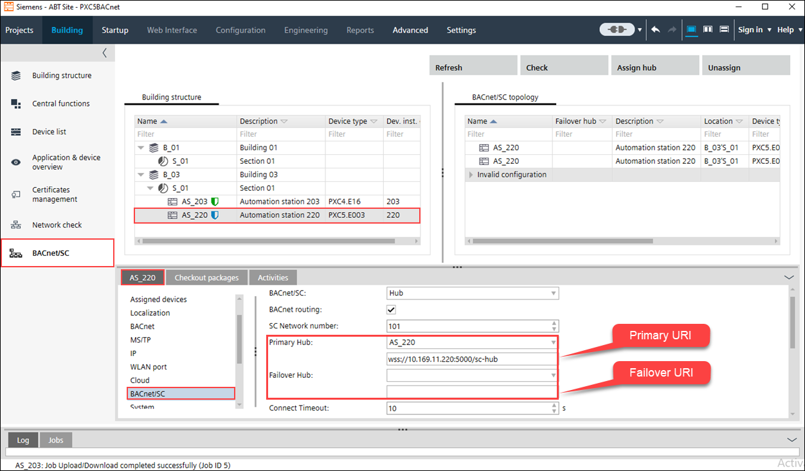
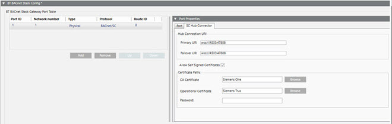

5. 配置 Desigo CC
1. Create a BACnet driver
- Desigo CC is launched.
- System Manager is in Engineering mode.
- In System Browser, Management View is selected.
- For the BACnet/SC protocol, you have imported certificates into the Windows Certificate Store.
- Select Project > Management System > Servers > Main Server > Drivers.
- In the Object Configurator tab, click New
 , and select New BACnet Driver.
, and select New BACnet Driver. - In the New object dialog box, enter the Description.
- Click OK.
- The BACnet driver object appears in System Browser but is not running.
- Click the BACnet tab (which finishes configuring the BACnet driver).
- Click the Extended Operation tab.
- In the Manager Status property row, click Start.
- The BACnet driver starts and is now ready to use.
2. Create a BACnet/SC port
必须为每个楼层集线器创建一个端口，以便能够与其建立连接。
NOTICE

建筑中心的数据过载
当建筑中心过载时，它无法再处理任何请求。
- Never connect the building hub with Desigo CC. If the building hub is connected, all nodes can be reached by Desigo CC, which leads to a traffic overload.
- Only connect floor hubs with Desigo CC.
- The BACnet driver is selected.
- Open the BT BACnet Stack Config expander.
- In the BT BACnet Stack Gateway Port Table section, click Add and then select BACnet/SC.
NOTE: You can create a maximum of 30 physical connections. If you need more, contact Technical Support. - In the Port Properties expander, set the Network Number where your management station is connected (typically =1).
- Leave the Attached check box selected if you want the router port attached and accessible to other devices on the BACnet network.
- Configure the SC Hub Connector:
Add a Primary URI using the format wss://<IP address or machine name>:<port number>. If you directly copy the URI from ABT Site, the appendix sc-hub must be deleted.
Note: Third-party vendors must configure the Primary and Failover URIs using third-party tools. Siemens devices use ABT for the URIs, as shown in the following image:
- (Optional) Add a Failover URI in case the Primary URI cannot communicate.
NOTE: The Primary and Failover URIs must be different. - (Optional) Select the Allow Self Signed Certificates checkbox if you created your own certificate.
- Click Browse next to the CA Certificate field and select a [ABT_project_name_current_date] certificate from the list.
- Click Browse next to the Operational Certificate field and select a client certificate server.pfx from the list.
- In the Password field, enter the password created for the private key.
- Click Save
 .
. - Repeat all steps for each floor hub.
- BACnet Driver and BACnet/SC port are configured in Desigo CC.
